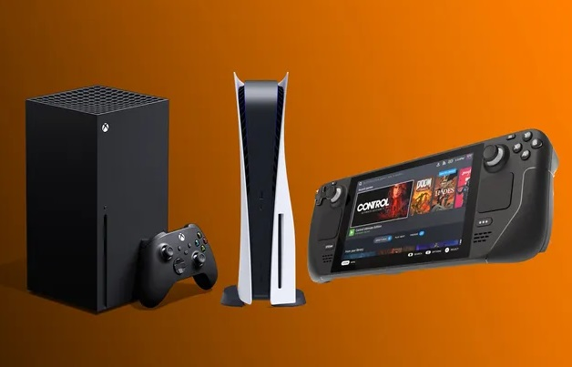

Что такое игровая приставка?

Игровой приставкой называют специализированное электронное устройство, предназначенное для видеоигр; для таких устройств, в отличие от персональных компьютеров, запуск и воспроизведение видеоигр является основной задачей.

Первой коммерческой игровой приставкой стала Magnavox Odyssey, вышедшая в 1972 году. Приставка была способна лишь к выводу на экран и перемещению трех квадратных точек. Но сейчас, с выходом девятого поколения консолей, игровые приставки получили поддержку трассировки лучей а также способны на вывод изображения в формате разрешения 4К.
Помимо видеоигр, приставки могут дополнительно выступать в качестве устройств для воспроизведения видео и музыки, доступа в Интернет. Домашние игровые приставки обычно используются в домашнем быту, используют телевизор, проектор или компьютерный монитор в качестве независимого устройства отображения и игровой контроллер в качестве устройства ввода. Портативные (карманные) игровые системы имеют собственное встроенное устройство отображения.
Современные игровые приставки
За последние пятьдесят лет игровые приставки претерпели серьезные изменения. На сегодняшний день к консолям последнего поколения относят PlayStaion 5, Xbox Series X/S, а также Steam Deck, которая пусть и является портативной консолью, но все еще имеет достаточную производительность для запуска современных игр. Новейшие игровые приставки вместо жестких дисков стали использоваться твердотельные накопители, благодаря чему сократилось время загрузки в играх.
